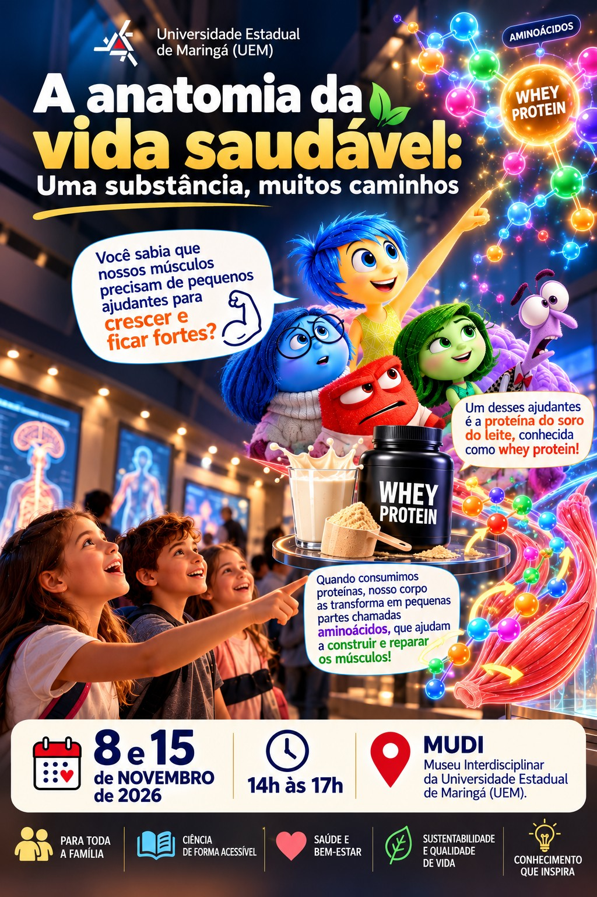

AGORA EM EXIBIÇÃO
Whey protein e músculos
01/09
FOLDER ORIGINAL

FOLDER 01 DE 06
Descubra como as proteínas fornecem aminoácidos que ajudam na construção e recuperação dos músculos.
MOSTRA DIGITAL DE DIVULGAÇÃO CIENTÍFICA
Uma substância, muitos caminhos. Explore os folders e vídeos do evento em uma apresentação interativa.

Descubra como as proteínas fornecem aminoácidos que ajudam na construção e recuperação dos músculos.
TODOS OS CONTEÚDOS